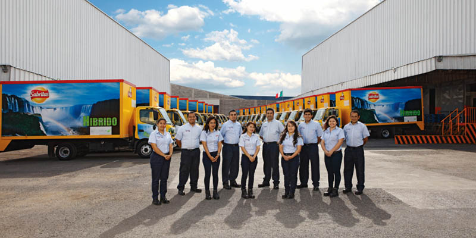

mision

Nuestra misión es ser la primera compañía de productos de consumo en todo el mundo,
centrada en la producción de alimentos y bebidas convenientes. Intentamos proporcionar
beneficios económicos adecuados a nuestros inversionistas al mismo tiempo que proporcionamos oportunidades de crecimiento y superación a nuestros empleados, socios comerciales y comunidade
s en las que operamos. En todo lo que hacemos actuamos con honestidad, imparcialidad e integridad.
vision
Cuidar a nuestros clientes, consumidores y el mundo en que vivimos
Nos impulsa un intenso espíritu competitivo en el mercado, orientado hacia las soluciones que logren
un triunfo para nuestros accionistas y para nosotros. Nuestro éxito depende de un total conocimiento de nuestros
clientes, consumidores y comunidades. Ocuparnos de ellos significa darles un valor extra. Sembramos para después cosechar, no arrebatar.